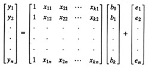
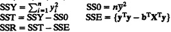
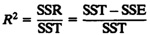
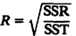
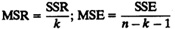
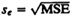
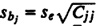
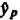

CHAPTER 15
OTHER REGRESSION MODELS
He uses statistics as a drunken man uses lamp-posts—for support rather than for illumination.
—Andrew Lang
The simple linear regression models discussed so far are restricted in three ways. First, only one predictor variable is allowed. Second, the predictor variables must be quantitative variables. Third, the response must be a linear function of the predictors. Sometimes, these restrictions cannot be met. In some of these cases the regression technique can still be used with a slight modification of the problem. Such special cases are the topic of this chapter. In particular, we describe techniques to handle the following cases:
- • Multiple Linear Regression: More than one predictor variable is used.
- • Categorical Predictors: The predictor variables are not quantitative but represent categories such as CPU type, disk type, and so on.
- • Curvilinear Regression: The relationship between the response and predictors is nonlinear.
- • Transformations: The errors are not normally distributed or the variance is not homogeneous.
In addition, the problem of outliers is discussed and a list of common mistakes in regression is presented in this chapter.
15.1 MULTIPLE LINEAR REGRESSION MODELS
A multiple linear regression model allows one to predict a response variable y as a function of k predictor variables x1, x2,...,xk using a linear model of the following form:
y = b0 + b1x1 + b2x2 + ... + bkxk + e
Here, {b0,b1,...,bk} are k + 1 fixed parameters and e is the error term.
Given a sample {(x11,x21,...,xk1,y1),...(x1n,x2n,...,xkn,yn)} of n observations, the model consists of the following n equations:
y1 = b0 + b1x11 + b2x21 + ... + bkxk1 + e1
y2 = b0 + b1x12 + b2x22 + ... + bkxk2 + e2
.
.
.
yn = b0 + b1x1n + b2x2n + ... + bkxkn + en
In vector notation, we have:

or
y = Xb + e
where
- y = a column vector of n observed values of y
- = {y1,...yn}
- X = an n row by k + 1 column matrix whose
- (i,j + 1)th element Xi,j + 1 =1 if j = 0 else xij
- b = a column vector with k + 1 elements
- = {{b0,b1,...,bk}
- e = a column vector of n error terms
- ={e1,...,en}
Notice that all elements in the first column of X are 1.
The analysis of multiple regression is summarized in Box 15.1. Most of the expressions are similar to those for simple regression and are illustrated by the following example. The only considerations that have not been covered under simple linear regression are those of analysis of variance and the problem of multicollinearity. These are discussed in the sections following the example.
|
Box 15.1 Multiple Linear Regression
- 1. Model: yi = b0 + b1x1i + b2x2i + ... + bkxki + ei
or in matrix notation: y = Xb + e
where b = A column vector with k + 1 elements = {b0,b1,...,bk}
- y = A column vector of n observed values of y = {y1,...,yn}
- X = An n row by k + 1 column matrix whose
- (i,j + 1)th element Xi,j+1 = 1 if j = 0 else xij
- 2. Parameter estimation: b = (XTX)–1(XTy)
- 3. Allocation of variation: 
- 4. Coefficient of determination: 
- 5. Coefficient of multiple correlation 
- 6. Degrees of freedom:

- 7. Analysis of variance: MSR = 
Regression is significant if MSR/MSE is greater than F[1–α;k,n–k–1].
- 8. Standard deviation of errors: 
- 9. Standard deviation of parameters: 
where Cjj is the jth diagonal term of C = (XTX)–1
- 10. Prediction: Mean of m future observations
 = b0 + b1x1p + b2x2p + ... +bkxkp
Or in vector notation: = xTpb; here xTp = (1,x1p,x2p,...xkp)
- 11. Standard deviation of predictions:

- 12. All confidence intervals are computed using t[1–α/2;n–k–1].
- 13. Correlations among predictors:

- 14. Model assumptions:
- (a) Errors are independent and identically distributed normal variates with zero mean.
- (b) Errors have the same variance for all values of the predictors.
- (c) Errors are additive.
- (d) xi’s and y are linearly related.
- (e) xi’s are nonstochastic and are measured without error.
- 15. Visual tests:
- (a) Scatter plot of errors versus predicted responses should not have any trend.
- (b) The normal quantile-quantile plot of errors should be linear.
|
Example 15.1 Seven programs were monitored to observe their resource demands. In particular, the number of disk I/O’s, memory size (in kilo-bytes), and CPU time (in milliseconds) were observed. The data is shown in Table 15.1.
| TABLE 15.1 Data on CPU Time, Disk I/O’s, and Memory Size
|
|
CPU Time,
yi
| Disk I/O’s,
x1i
| Memory Size,
x2i
|
|
| 2
| 14
| 70
|
| 5
| 16
| 75
|
| 7
| 27
| 144
|
| 9
| 42
| 190
|
| 10
| 39
| 210
|
| 13
| 50
| 235
|
| 20
| 83
| 400
|
|